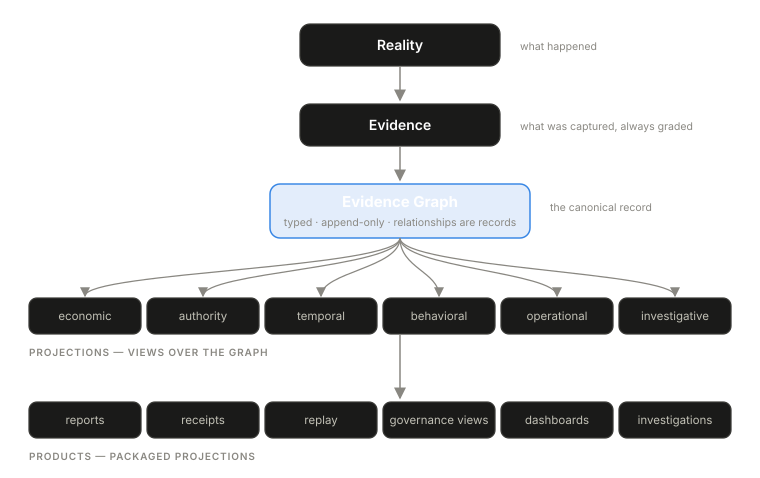

Engineering disciplines become teachable when they acquire a small number of canonical objects. Version control has the commit graph. Distributed systems have the trace. Event sourcing has the immutable log. Those objects do more than store data; they teach engineers how to think about the system.
AI runtime systems lack that shared object. Teams hold logs, traces, metrics, provider bills, prompt records, and audit events — each answers part of the problem, and none can carry the operational semantics of an AI workflow. A trace can show order. A bill can show cost. A log can show messages. What’s missing is the structure that connects those facts into evidence-backed meaning: which decision selected this path, which event caused that one, which dollars belong to which retry chain, which approval allowed which action.
The missing object is the Evidence Graph: a typed, append-only graph of runtime evidence and evidence-backed relationships. Relationships are first-class records. “The timeout caused the retry” is stored as evidence, not reconstructed later from timestamps — because chronology is weaker than causality, and a system that infers causes from ordering is telling stories.
The deeper claim of the paper is small and load-bearing: everything else is a projection.

Reality is what happened. Evidence is what the system captured or imported about it — complete or partial, observed or inferred, always labeled. The graph relates the evidence. Projections are views over the graph: economic reports, receipts, replay, governance views, investigation workspaces, dashboards. Products are packaged projections with workflows around them.
The discipline in that hierarchy is that no projection becomes a separate source of truth. A cost report and an incident timeline drawn from the same graph cannot silently disagree, because both are derived views over the same records. When they do disagree, the graph shows which one lost evidence on the way. Most operational tooling today works the other way around: each tool reconstructs its own version of events from its own partial data, and reconciling them is manual archaeology.
The graph does not replace logs, traces, metrics, or dashboards. It gives them a source.
The full paper
Paper 3 is the structural core of Volume I and the most technical of the six: the laws a graph like this must obey, the vocabulary of records and relationships it holds, the projection model, how graph completeness is assessed, worked examples for economics and governance, and design requirements for anyone building one. It is also the paper we gate most tightly, for the reasons on what we publish and what we gate. The full paper is available to teams we work with.
Next: Paper 4 — The AI Receipt, the portable artifact projected from this graph.